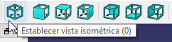
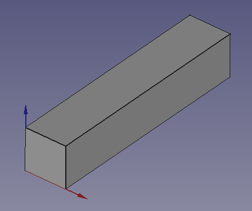
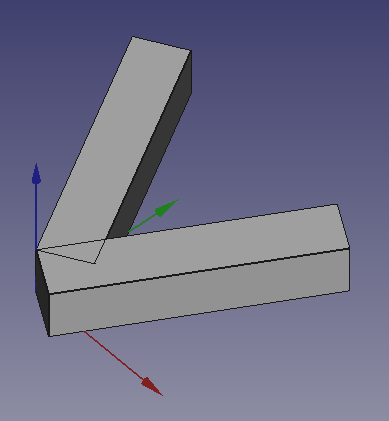
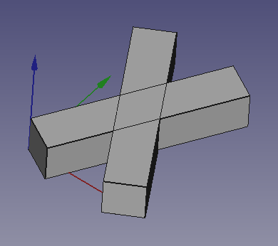
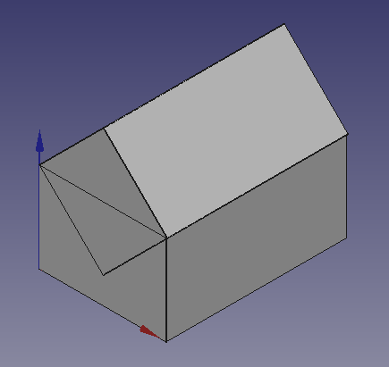
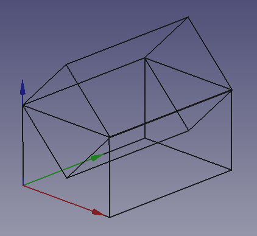
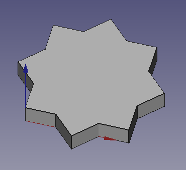
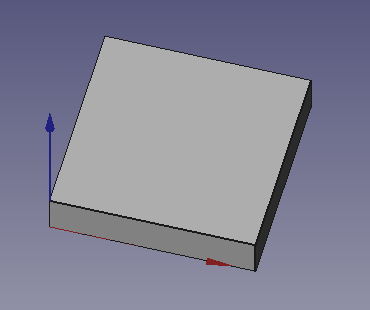
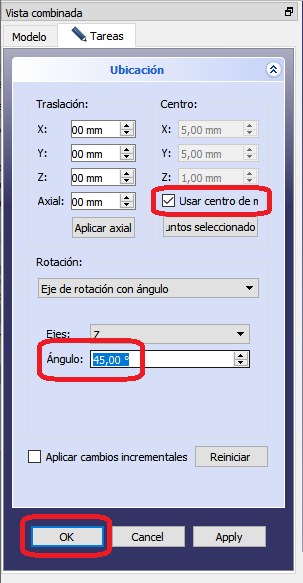

6. Rotación de piezas¶
En este tutorial vamos a aprender a girar y rotar sólidos.
Abrimos la aplicación FreeCAD y hacemos clic en el icono para crear un nuevo documento
 .
.Seleccionamos el banco de trabajo Part para comenzar a diseñar objetos en 3 dimensiones.
En este punto vamos a añadir los ejes de referencia para que nos ayuden a situar las piezas correctamente.
En el menú
Ver... Activar o desactivar cruz de los ejes.En inglés
View... Toggle axis cross
Ahora creamos un cubo clicando el primer icono de la barra de objetos sólidos.

y cambiamos el tamaño del cubo según las siguientes dimensiones.
Longitud (Lenght) = 2
Anchura (Width) = 10
Altura (Height) = 2
Ahora seleccionamos ver la pieza en vista isométrica.
La pieza se verá como en la siguiente imagen.
Una vez creada la barra, vamos a girarla alrededor del Eje Z.
Seleccionamos la pestaña Datos y cambiamos el Ángulo a un valor negativo de -30º
El eje de giro escogido será el eje vertical o Eje z. Por esa razón el Eje tendrá un valor de 1 en Z y tendrá un valor de 0 en los demás ejes.

El objeto girará tal y como aparece en la siguiente figura.

Ahora añadimos un cubo más y modificamos su tamaño al igual que hicimos con el cubo anterior.
Longitud (Lenght) = 2
Anchura (Width) = 10
Altura (Height) = 2
Una vez cambiado el tamaño, giramos la nueva pieza también sobre el eje z con un Ángulo positivo de 30º (en el sentido contrario a la pieza anterior).
por último, podemos trasladar la nueva pieza (Cubo001) a la posición
x = 5, y = -1, z = 0
para formar una equis.

Ejercicios¶
Crea la siguiente figura rotando un cubo.
Escogiendo en el menú
Ver... Estilo de dibujo... Modelo de alambresla figura se visualiza de la siguiente manera.Para construir la base crearemos un cubo y cambiaremos las siguientes dimensiones
Longitud (Lenght) = 14
Anchura (Width) = 20
Altura (Height) = 10
El tejado se creará a partir de un cubo cambiando las siguientes dimensiones
Longitud (Lenght) = 10
Anchura (Width) = 20
Altura (Height) = 10
La pieza resultante debe girar 45º sobre el Eje Y
Una vez girada, la pieza debe trasladarse hacia arriba hasta que esté colocada como tejado.
Crea la siguiente figura con dos cubos.
Primero crea un cubo nuevo y cambia su Altura (Height) a 2 milímetros.
Copia y pega el cubo anterior para tener 2 cubos iguales.
El segundo cubo se debe rotar 45º respecto del eje Z, pero vamos a rotarle en torno a su centro.
Primero abrimos el cuadro de diálogo para realizar giros complejos. Clicamos en Placement y luego en el cuadrado de la derecha.

Una vez abierto, debemos marcar la casilla de giro respecto al centro de la figura, girar un Angulo de 45º y clicar en OK.
Al final obtendremos la siguiente figura.

Ya solo falta unir las dos piezas y simpliplicar la forma (refine).
Videotutorial¶
Vídeo: rotando voy.